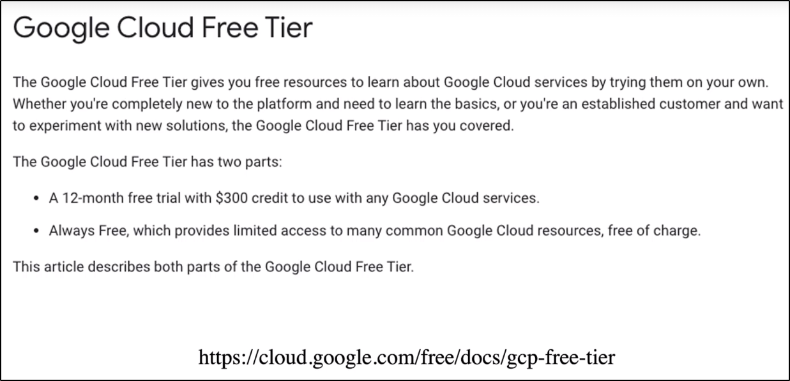

Kubernetes on GCP (GKE)
Deployeremo su Google Kubernetes Engine (GKE).

Ora che siamo nella Dashboard:

Creiamo un nuovo Cluster:

Ora ci dirà di settare le opzioni di base:
Cambia solo il nome e puoi lasciare le opzioni di base per il resto!

NB: Per il resto puoi modificare anche altre cose!

Anyway, aspettiamo che si completa l'operazione ci creazione:

Per connetterci al nostro cluster, possiamo semplicemente
cliccare su "Connect" e fare "Run in Cloud Shell"


Il Cloud possiede già tools come kubectl e possiamo vedere i nodi:

Scarichiamo il nostro progetto coi YAML:


Alcune cose da fare: Cambiare il tipo di NodePort a LoadBalancer!


Controllando nella dashboard, dobbiamo notare che i service usano il LoadBalancer esterno!